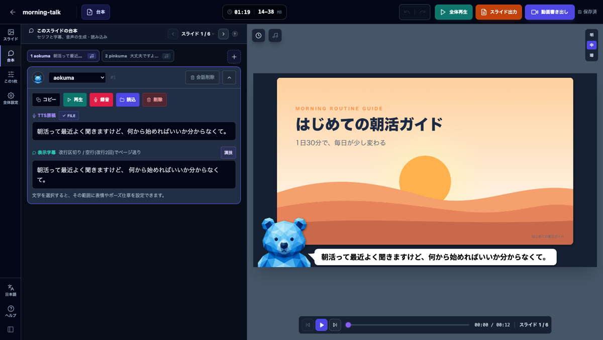

Bundle Builder
資料から台本と音声をまとめて作る補助ツール。APIキーの設定なしで音声まで作れます
OFFICIAL MANUAL
スライド資料を、字幕・音声付き動画へ。
スライド資料にナレーション音声・字幕・キャラクター・BGM・OP/ED を付けて、ブラウザだけで動画に書き出せる SlideCast Studio の公式マニュアル（v5.5 対応）。

👋 OVERVIEW
更新情報
SlideCast Studio の公式マニュアルへようこそ。
SlideCast Studio は、まじんさんの note を見て魔改造したスライド動画作成ツールです。このツールが作れたのも、まじんさんがプロンプトを公開してくださったからです。
そして私がそのプロンプトを魔改造して、GAS アプリ化したのが SlideCast Studio v1.0。
それを大幅にアップデートしたのが、この SlideCast Studio v2〜 です。
🧭 このマニュアルの読み方
はじめての方は「第4章 ダッシュボードと作品の作り方」から読むのが最短です。v5.0 以前からお使いの方は、画面の配置が変わったので「第5章 エディタの画面の地図」を先にご覧ください。各章の見出しをクリックすると内容が開きます。
🎬 動画で見たい方へ
操作の流れは「動画マニュアル」でも見られます。v5.5 の画面で撮り直した使い方動画を、章の流れに沿って並べています。各章の最後にも、対応する動画へのリンクがあります。
SlideCast Studio がどんなツールなのか、何ができるのかをまとめています。
SlideCast Studio は、PDF・画像・動画をブラウザに読み込み、ナレーション音声・字幕・キャラクター・BGM を付けて、そのまま動画に書き出せるアプリです。インストール不要で、作業はすべてお使いのブラウザの中で行います。
資料から台本と音声をまとめて作る補助ツール。APIキーの設定なしで音声まで作れます
比率と画面の「型」、キャラ、字幕デザインを選びながら作品を作成
プレビューの変えたい所を押すと、その設定の場所へ移れます
帯・縁取り・影など。動き22種、強調、カラオケ風、名前バッジ
口パク・話すときの動き・表情・仕草・おまかせ演技
スライドアニメーション22種、画面の切り替え効果30種
文字や画像を貼る・流す・隅に置く。強調・傾き・動きも
MP4・WebM をスライドとして差し込み、音と再生範囲を調整
スライド単位で曲を切り替え、フェードでつなぐ
声の位置・間・スライドの長さを秒単位で整える
オープニング・エンディング動画を前後に付ける
動画（MP4・WebM）、PPTX・PDF・ブック型PDF・画像ZIP
ℹ️ このマニュアルの対応バージョン
v5.5「SPOTLIGHT」の画面と名前で書いています。版ごとに増えた機能の詳しい紹介は、トップページの各アップデート記事をご覧ください。
動画の書き出しはあなたのパソコン上で行われます。快適に使うための目安をまとめました。
動画のレンダリングはあなたのパソコンのブラウザメモリを使用します。
| 搭載メモリ | 720p | 1080p | 1440p |
|---|---|---|---|
| 8GB | 20〜40枚程度 | 10〜20枚程度 | 非推奨 |
| 16GB（推奨） | 50〜100枚程度 | 25〜50枚程度 | 10〜20枚程度 |
| 32GB | — | 50〜100枚程度 | 20〜40枚程度 |
出力解像度は 720p / 1080p / 1440p の3種類です（16:9 なら 1280×720 / 1920×1080 / 2560×1440）。
出力した動画がカクつくと感じたら
「通常（録画方式）」の書き出しは、再生しながら記録するためブラウザのメモリと処理の余裕を使います。書き出し中はほかの作業を止め、余計なタブも閉じておくと、出力される動画が滑らかになります。書き出し方式で「高品質（フレーム生成）」を選ぶと、PCの負荷によるコマ落ちや音ずれが起きません（第13章）。
保存先とデータが消えるケース、APIキーの取り扱いについて必ず確認してください。
すべてのプロジェクトデータは「あなたのブラウザ内（IndexedDB）」に保存されます。外部サーバーへのアップロードは行いません。
🆘 復元はできません
一度消えたデータをアプリ側で復元することはできません。定期的なバックアップが唯一の対策です。
⚠️ 漏洩リスク
万が一 APIキーが漏洩し不正利用されると、高額請求につながるリスクがあります。
🔒 アプリ内の「通信と安全」
どんなときに外部と通信するか、データがどこに残るか、API料金の上限の決め方は、左端のアイコン列の「ヘルプ」→「通信と安全」タブにまとめています。
Bundle Builder から始めるのがおすすめです。資料や白紙から作ることもできます。

Bundle Builder は、APIキーの設定なしで台本と音声まで作れる補助ツールです。ダッシュボードの「Bundle Builder」から「Gemini Canvas で開く」を押すと、ブラウザで起動します。
上に並ぶ「画面」「資料」「キャラ」「デザイン」の4つの手順で進みます。右のプレビューには、選んだ内容で作ったときの姿が出ます。


💡 あとから変えられます
選んだ比率・型・デザインは、作成後も「全体設定」で変えられます。追加したキャラはキャラ一覧に保存され、ほかの作品でも使えます。
「資料から作成」は、手元の PDF や画像をそのままスライドにします。取り込み方法は「ファイルを選択」と「フォルダを選択」の2つで、PDF は1ページずつ、画像は1枚ずつスライドになります（ZIP の中の画像はファイル名の順）。PowerPoint などの資料は、PDF に書き出してから取り込みます。
「空のプロジェクト」は、スライドが1枚もない状態でエディタが開きます。左の「スライド追加」から資料を足すか、「空のスライドを追加」で白紙のスライドを作ります。
資料を取り込むときに、動画に使う画像の細かさを選びます。既定は「Full HD」（長辺が最大1920ピクセル）で、YouTube に上げる動画ならこのままで足ります。

⚠️ 元データが上限です
高い画質を選んでも、元の資料より精細になることはありません。
作ったプロジェクトは、ダッシュボードにカードで並びます。カードには実データの目安とバックアップ容量が出ます。
ダッシュボード上部には、ブラウザ内のデータ使用量（推定）が出ます。上限に近づいたら、不要なプロジェクトを削除するか、バックアップして退避しましょう。
v5.5 で画面の配置が大きく変わりました。まずはどこに何があるかをつかみましょう。

ℹ️ v5.0 までとの違い
下の台本・タイムラインの欄はなくなり、台本は左の「台本」、タイムラインはプレビュー左上の時計のボタンへ移りました。設定のボタンはヘッダーからアイコン列の「全体設定」へ移りました。プレビューを押しても再生・一時停止はしません。再生は操作バーのボタンから行います。設定の検索欄と「タイミング調整モード」、かんたんモードはなくなりました。
設定は、効く範囲で2つに分かれています。


設定は自動で保存され、すぐにプレビューへ反映されます（キャラの編集だけは「共有キャラに保存する」で反映）。設定を開いている間は、下の矢印か Ctrl / ⌘ + Z で元に戻せます。
どこにある設定か分からないときは、プレビューから辿れます。止まっているプレビューにマウスを乗せると、一番手前にあるもの（字幕・キャラ・名前バッジ・ステッカー・バッジ・テロップ・スライド画像・背景）が点線の枠と名札で囲まれます。そのまま押すと「ここを調整する」の一覧が出ます。


スライドの並べ替えから、台本の編集、音声の生成・読み込み・録音までを扱います。
左の「スライド」で一覧を開きます。サムネイルを押すとそのスライドへ移り、ドラッグで並べ替えます。いちばん下の「スライド追加」から、ファイル・フォルダで資料を足したり、「空のスライドを追加」で白紙のスライドを足したりできます。画像・動画・PDF・ZIP を一覧へドロップしても追加できます。

資料を持たないスライドです。作品の背景（単色・グラデーション・画像・動画）の上に、字幕・キャラ・吹き出し・テロップ・バッジ・ステッカーを載せられます。タイトル画面、章の区切り、エンドカード、会話だけの場面などに向いています。背景はプレビューの背景を押すと、設定へ移れます。あとから画像を設定すると、通常の画像スライドになります。
左の「台本」で、今のスライドの台本を開きます。エディタを開いたときは、最初に台本が出ます。上に並ぶボタンがこのスライドのセリフ（台本ブロック）で、＋で追加します。
表示字幕で文字を選ぶと、近くに「強調」「演技を追加」などのボタンが出ます（第7章・第9章）。
ヘッダーの「台本」から、台本をまとめて作る・入れる画面が開きます。

⚠️ 動画スライドは対象外
台本の生成は静止画のスライドにだけ、順番にセットされます。
ℹ️ 版による違い
録音ボタンは GAS版では出ません。ローカルHTML版は TTS を使わない想定のため、音声の生成まわりは出ません（録音・音声ファイルの読み込みは使えます）。
字幕の見た目・置き方・名前バッジ・動き・強調・カラオケ風。
字幕は「全体設定」の「字幕」タブで決めます。「字幕デザイン」「名前バッジ」「字幕の動き」「強調のスタイル」の4つの欄が並びます。字幕の位置や帯の高さは「画面」タブの型で決めます（第11章）。

見出しのスイッチを入れると、字幕の左上に話しているキャラの名前が出ます。「名前バッジのデザイン」で、名前・大きさ・位置・形・背景・文字をタブで変えられ、プレビューのバッジはドラッグで動かせます。
台本の「表示字幕」で文字を選び、黄色の「強調」を押してスタイルを選ぶと、その言葉だけ見た目を変えられます。変わるのは字幕の見た目だけで、読み上げは変わりません。

画面の型で縦書きを選ぶと、字幕・吹き出しが縦書きになります。帯の位置（左・中央・右）や幅、英数字の向きなど、縦書き向けの項目に切り替わります（9:16 など）。
スライドアニメーション、画面の切り替え効果、効果音、間の取り方。
どれも「全体設定」の「演出」タブで、作品全体に決めます。1枚だけ・1つの境目だけ変えることもできます。

静止画にズームやパンのゆっくりした動きを付けます。「既定の効果」を押すと一覧が開き、乗せると今のスライドでその動きが繰り返し再生されます。大きく分けて、ズーム・パン・続く揺れ（絵本ゆらぎ・手持ちカメラ・心拍など）・出だしだけ動くもの（ポップ開始・引きで始まるなど）の4つです。
ℹ️ 動画スライドには付きません
動画はそれ自体が動くので、スライドアニメーションは掛かりません。編集中のプレビューでは静止表示なので、動きは乗せて試すか、再生・全体再生で確かめます。
スライドが次へ移る瞬間の見せ方です。新しい作品は「フェード」0.4秒です。「エフェクトの種類」は21個のボタン（向きのある3つを4方向ずつ数えて30種類）で、乗せると今のスライドから次への切り替えが繰り返されます。
スライドの一覧の、スライドとスライドの間の札を押すと「境界の切替」が開き、その境目だけ種類・時間・範囲・効果音を変えられます。全体と違う境目は札に色が付きます。「すべてリセット」で全体の設定に戻ります。
「短い」0.1秒・「標準」0.2秒・「長い」0.4秒、「個別」で0〜3秒。1枚の中で1つだけ変えたいときは、タイムラインで声の帯をずらします（第11章）。
キャラを作って話者に割り当て、配置・動き・表情と仕草を付けます。
「全体設定」の「キャラ」タブで「新規作成」を押します。ここで作るキャラは全作品で共有され、ほかの作品でもそのまま選べます（「用途から作成」の途中でも追加できます）。

「共有キャラに保存する」で出来上がります。キャラの編集だけは、保存するまで反映されません。
登録順アニメーション：静止画を複数枚登録すると、話している間に登録順で切り替わります。2枚からでも使えます。カードをドラッグ、または矢印ボタンで並び替えできます。
1ファイルアニメ：GIF / アニメーションWebP / APNG を1ファイル登録すると、話している間そのアニメーションが再生されます。再生速度も調整できます。
6枚リップシンク：6枚の静止画を、ナレーションの音量に合わせて切り替えます。6枚の役割は固定です。
どの方式も、動画の中では話している間だけ動きます。素材は方式ごとに残るので、切り替えても消えません。音声連動の「リップシンク間隔」は「自動」がおすすめです。
MouthLoop で作ったキャラパックの ZIP は、方式を選ばずそのまま入れられます。キャラパックだと分かると確認の画面が出て、入っている表情と仕草が見られます。「キャラに登録」で方式が「音声連動」になり、6枚と演技素材（表情6種・ポーズ仕草）がまとめて入ります。
プレビューのアイコンや吹き出しは、掴んで動かし、四隅で大きさを変えられます。
MouthLoop のキャラパックに入っている表情（笑顔・悲しい笑顔・悲しい・怒り・驚き・困り・考え中）とポーズ仕草（手を振る・指をさす など）を、セリフに合わせて付けます。
おまかせ演技は、「実は」「意外」なら驚き、「不安」なら困り、のように内蔵のことばに合う表情を選びます。AI で解析しているわけではないので、追加の通信や料金はかかりません。自動で付けたものには「自動」の印が付き、「自動分を削除」で自動の分だけ消せます（手で付けたものは残ります）。
ℹ️ タイミングについて
演技のタイミングは、選んだ文字の位置と音声の長さから計算しています。単語の発音時刻を音声認識で取っているわけではないので、演出としてお使いください。
キャラ編集の「音声設定」で、アプリ内で生成するときの声を選びます（第12章）。Gemini TTS では次の30種類から選べます。
スライドの上に貼る・画面の帯に流す・隅に置く・動画を差し込む。
「この1枚」の「ステッカー」タブで＋を押すと、ステッカーが置かれます。文字か画像（背景が透明な PNG など）を、スライドの上に貼れます。プレビューで枠をドラッグして動かし、角・辺のつまみで大きさを変えます（「スナップ」がオンなら中央などに吸い付きます）。1枚のスライドに10枚まで置けます。


「全体設定」の「テロップ」タブ。画面の上や下の帯に、お知らせや見出しを出しておけます。「上部テロップ」と「下部テロップ」を別々に設定できます。

「全体設定」の「バッジ」タブ。左上・右上・左下・右下の隅ごとに1つずつ、短い文字やロゴを出しておけます。
⚠️ 利用上の注意
他サービスのウォーターマークを隠すような使い方は、規約違反になる場合があります。上部テロップを出しているときに位置の基準を「画面全体」にすると、上の隅のバッジがテロップの帯に隠れます。
スライドの一覧の「スライド追加」から動画のファイル（MP4・WebM）を渡すと、1枚のスライドとして入ります（サムネイルに「動画」の印）。取り込み画質は画像のための設定で、動画は元の画質のまま入ります。設定は「この1枚」の「動画の再生」タブです。
音楽を敷き、1枚の中の時間を整え、作品の前後と画面全体を決めます。
プレビュー左上の音符か、「全体設定」の「BGM」タブ。曲はアプリに入っていないので、手元の曲のファイルを「BGM を追加」で渡します（「AI CODE BGM STUDIOで音源を作る」から曲を作ることもできます）。

プレビュー左上の時計のボタンで、プレビューの下に今のスライドのタイムラインが開きます。境目のつまみで高さを変えられます。

目盛りを押すかドラッグすると、その秒の絵がプレビューに出ます。「スナップ」がオンなら、ほかの帯の端や再生位置に吸い付きます。スライドの長さは「この1枚」の「静止画の表示」→「表示時間」で秒を入れて決めることもできます。短くしすぎても、声が終わるまでは流れます。
「全体設定」の「OP/ED」タブ、またはスライドの一覧の「OP を付ける」「ED を付ける」から、オープニング・エンディングの動画を付けます。対応形式は MP4・WebM（500MB以内）で、比率（16:9・9:16 など）ごとに別々に設定・保存できます。一覧のいちばん上と下に OP・ED の行が出て、押すとプレビューで流せます。
OP・ED との境目の切り替え効果は、第8章の「OP/ED動画の境界にも適用」と境目の札で決めます。

作品全体の設定の v5.5 版の動画は制作中です。それまでは動画マニュアルの旧版（v4.4 の画面）をご覧ください。
Bundle Builder を使わず、自分の APIキーでエディタから音声を生成したい方向けです。設定は「全体設定」の「音声」タブです。
設定画面では次の操作ができます。
Gemini モデル（TTS対応）は次から選べます。
⚠️ 無料設定のままだと Pro TTS は失敗しやすい
無料利用設定のままでは Pro TTS は失敗する可能性が高いため、Flash TTS を使うか有料プランを有効にしてください。
モデルを選ぶと、推定料金の目安が出ます。Gemini 3.8 Flash TTS / 3.8 Flash Lite TTS では、声の一覧のほかに「その他の音声（ID を入力）」で、AI Studio の音声ライブラリの声や自作の音声も使えます（自作の音声は、それを作ったプロジェクトの APIキーでだけ使えます）。
感情表現は控えめですが、均一で安定した音声を使いたい場合に追加設定します。
⚠️ 無料枠と料金
AI Studio の無料枠には1分あたり・1日あたりの回数の上限があります。上限に達したら、AI Studio の Playground で音声を作ってアップロードすることもできます。生成の料金は、キーを作ったプロジェクトの請求先に請求されます。「Spend」ページで月額上限を設定しておくと安心です。
動画（MP4・WebM）と、PPTX / PDF / 画像 の書き出しについてまとめます。
「動画書き出し」を押すと、確認画面で次を選べます。
フレームレートは 30fps（標準）／60fps（なめらか）から選べます。想定サイズの目安も表示されます。
いちばん上で「通常（録画方式）」と「高品質（フレーム生成）」を選べます。既定は「通常（録画方式）」で、再生しながら記録します。「高品質（フレーム生成）」は1コマずつ完成を待って保存するため、PCが重くなってもコマ落ちや音ずれが起きません。そのぶん時間はかかり、対応ブラウザ（Chrome / Edge など）が必要です。
ℹ️ MP4 非対応ブラウザについて
MP4 はブラウザによって非対応の場合があり、その場合は自動的に WebM へ切り替わります。

メモリ使用率が高い場合は、書き出し前に警告が表示されます。
上の注意は「通常（録画方式）」向けです。「高品質（フレーム生成）」は負荷でコマが飛ばない仕組みのため、書き出し中に他の作業をしても問題ありません（ページは開いたままにし、PCのスリープは避けてください）。
⚠️ MP4互換性について
MP4 で書き出しても、そのまま投稿できない場合があります。規格が異なると SNS 側が対応していないことがあるため、必要に応じて H.264 へ変換してください。
「スライド出力」からは次の形式を選べます。
さらに、次の設定ができます。
A4縦に「スライド画像＋字幕テキスト」を配置した資料PDFです。字幕が長い場合は自動でページ分割されます。
印刷して配布する資料・セミナーのハンドアウトに最適です。
ℹ️ 動画スライドの扱い
動画スライドは最初のフレームを静止画として書き出します。動画そのものは含まれません。

書き出しの v5.5 版の動画は制作中です。書き出しの画面そのものは v4.4 からほとんど変わっていません。
データはブラウザの中にだけあります。定期的なバックアップが唯一の備えです。
ダッシュボードの「バックアップ」から、含める項目を選んで ZIP に書き出します。プロジェクトのカードの「バックアップ保存」なら、その作品だけを保存できます。

推定バックアップサイズが、安全／注意／危険の3段階で出ます。危険水準では復元に失敗するおそれがあるため、プロジェクトを分けて保存してください。キャラクターは画像を含むので容量が大きくなります。別のPCへ移すときや、初めて渡す相手にはオンにしてください。
ダッシュボードの「データ復元」で、バックアップの ZIP・JSON を選ぶかドロップします。既存のデータは消さずに追加で復元し、同じキャラ・プロジェクトが見つかったときの扱い（スキップ／上書き／別名で追加）を選べます。動画を含めずに保存したバックアップは、復元後に「動画を差し替え」で動画を入れ直します。
ダッシュボードのゴミ箱のボタンから、削除するカテゴリを選べます。
⚠️ 削除は元に戻せません
削除の前に「バックアップを開く」で保存しておくことをおすすめします。
よくある症状と対処法をまとめています。
最新版へ差し替えるときの手順です。
SlideCast Studio を購入済みの方は、これまでと同じ有料noteの共有リンクから最新版をコピーしてご利用ください。
既存のプロジェクトやライブラリ、設定を引き継ぎたい場合は、念のため先にダッシュボードの「バックアップ」からバックアップを作成してください。
GAS版を同じURLのまま更新する場合は、既存のGASプロジェクトのファイルを最新版のファイルへ差し替え、既存のデプロイを「新バージョン」として再デプロイします。差し替えるファイルはバージョンによって変わるので、そのバージョンのアップデート記事の案内を確認してください。
ローカルHTML版を使用する場合は、「SlideCast Studio〖ローカル版〗.html」をダウンロードして開いてください。
⚠️ データの引き継ぎ
新しいGASプロジェクトや別のブラウザで開いた場合、以前のデータは自動では表示されません。その場合はバックアップから復元してください。
SlideCast Studio はアップデートを続けています。最新情報はこの note と作成者の X をフォローしてチェックしてください。ご不明な点やご要望、不具合の報告はコメントまでお願いします。